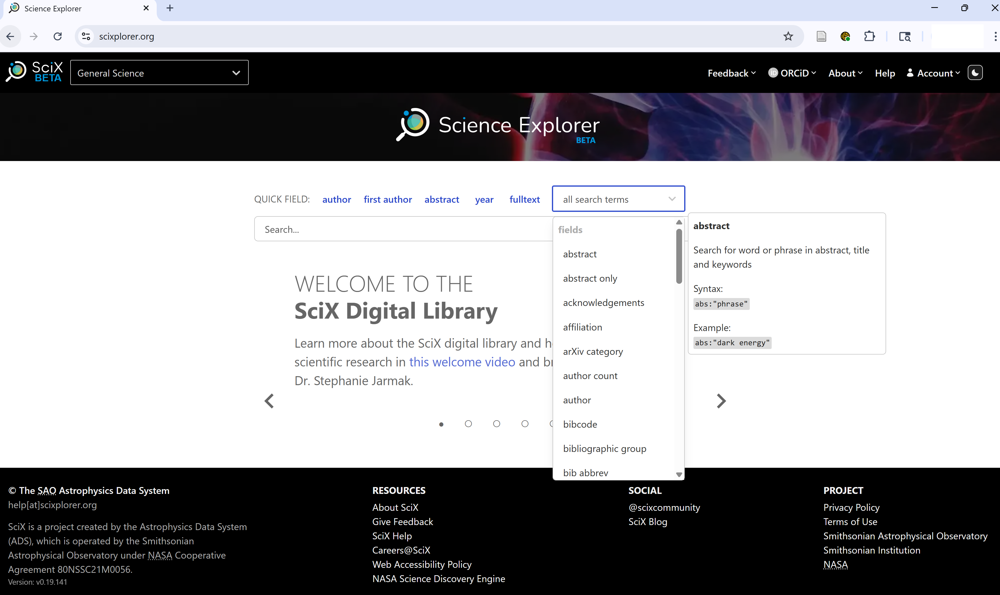

Basic Searches in SciX
Last updated on 2025-07-06 | Edit this page
Overview
Questions
- How do you find an article by a specific author?
- How do you find articles about a specific topic?
- What other types of resources can you discover besides articles?
Objectives
- Execute a basic author search
- Execute a basic keyword search
- Refine a search using facets
- Identify useful metadata and resources through the abstract view
- Follow links from the abstract page to access resources such as the open access version of the article, related software, and associated datasets
Once you’ve accessed the SciX main page, you’re ready to explore its search capabilities. In this episode, we’ll cover both author and keyword searches, then show you how to refine your results.
When you navigate to SciX, ensure you can see the homepage. The SciX address is scixplorer.org

On your first visit, select your preferred discipline from the dropdown menu in the upper left.
Note: This step customizes your search tools but does not limit your overall search.

SciX offers a help carousel on the main search page. Click the left/right arrows to view introductory resources, including a quick start guide and search examples.
For more detailed assistance, click the “Help” button in the upper right.

As an open science search engine, SciX is primarily concerned with ensuring that literature, data, and software are findable or discoverable. So, let’s find some relevant papers. Author searches are among the most common performed in SciX.

Challenge
If you select author from either the quick fields or the dropdown menu, SciX will add the field to the search bar.


author:”shoemaker” returned 2,560 results when this example was run as you can see in the upper left; because SciX adds new material on daily and weekly cycles you may see a different count.
The results are sorted by relevance and are in descending order. You can change the sorting criterion by using the dropdown menu to select: date, author count, citation count, entry date, first author, normalized citation count, or read count. Click the button next to the dropdown menu to switch between descending and ascending order.
For each article returned, you see the title, author list, date of publication, journal, and citation count. Looking at the three icons on the right, you can tell whether SciX links to the full-text, references or citations, and data.

As an open science digital library, SciX is also concerned with ensuring you can access the papers, data, and software that you want.

Looking at the list of results as a whole, I see some interesting articles with an author named “Shoemaker” but perhaps not immediately, Gene Shoemaker, planetary scientist. The author box on the left allows me to narrow my results. It lists variants of the name “Shoemaker” at the top followed by the names of co-authors.
The most common variants and co-authors are listed first.
Clicking a name variant opens additional options:
- Limit to preferred name(s), showing only papers by that variant
- Exclude unlikely variants to remove unrelated results
This helps narrow your results to the specific individual you’re interested in.

You can further narrow your search results using the Institutions facet.
For example, if your target author worked at Lowell Observatory, you can:
- Limit to papers with authors from that institution
- Exclude results from other affiliations
This is especially useful when multiple authors share similar names but work at different institutions.

You can also adjust the date range of your results using the slider in the left sidebar.
- Drag the endpoints of the slider to limit results by year
- Click the expand icon (four arrows) to see a larger or more precise timeline
Use this if you’re researching a specific publication window or want to filter out older or newer results.
Keyword Search
Return to the SciX main search page. Use the “all search terms” dropdown menu to start a keyword search for ‘crater.’ 

keyword:”crater” returned 8,901 results when this example was run as you can see in the upper left; because SciX adds new material on daily and weekly cycles you may see a different count.
SciX automatically expands keyword searches with discipline-specific
synonyms, related terms, and even common misspellings or alternate
forms. For example, a search for crater might automatically
include terms like:
- craters, cratering, cratered
- craterlets, craterlike, crateris
- craterform, subcrater, craterization
- krater, cratori, noncrater, etc.
This expansion improves discoverability across disciplines that might use different terminology for the same concept.
If you only want the exact term you typed (no
expansion), add an equals sign: =crater.
This exact-match feature is helpful when you’re targeting highly specific terms or avoiding irrelevant results.
Keyword Search
Return to the SciX main search page. Execute an exact keyword search for ‘crater’.
=keyword:”crater” returned 2,329 results when this example was run as you can see in the upper left; because SciX adds new material on daily and weekly cycles you may see a different count.
With synonym expansaion disabled, fewer results are returned. However, those precise results may be just what you need.
Keyword Search
Experiment with an author or keyword search, both with and without the equal sign. What differences do you observe? Discuss your experiences with a partner
After running a keyword search, you can refine your results using the Keywords facet in the sidebar. Authors or publisheres provided these keywords, which are listed in order of frequency with in your results.
You can:
- Choose to limit to preferred keywords or exclude undesired ones
- Click the upward arrow in the lower right corner of the facet to browse the full list of keywords
- Sort keywords by frequency or alphabetically
- Search for a specific keyword or partial match
- Download keywords for use outside of SciX
{alt=‘SciX Keywords facet search panel with results of search for keywords begining with ’sh’ sorted by frequency’}
This is especially useful when you’re trying to focus on a specific subtopic or filter out irrelevant results.
You can expand the places SciX looks for your keyword by using an abs search. Using the abs prefix will search
- title
- keywords, provided by author or publisher
- abstract
The presence of your keyword in the abstract is a better indicator of its significance within the paper as a whole than a passing mention in the full text. This “balanced” search is the most common topical search in SciX.
Challenge
Return to the main menu. Use the ‘all search terms’ dropdown menu to start an ‘abs’ search for ‘crater’.

abs:”crater” returned 53,647 results when this example was run as you can see in the upper left; because SciX adds new material on daily and weekly cycles you may see a different count.
By searching more fields, an abs search will produce more results than just searching the keywords field alone.
SciX allows you to filter your search results based on whether a paper is refereed (peer-reviewed) or non-refereed (everything else).
You can find this option in the Refereed facet in the sidebar. It’s useful if you’re looking only for peer-reviewed journal articles or want to ensure you see other materials like conference proceedings or technical reports.
Note: SciX considers dissertations to be refereed. Most, but not all, conference abstracts and proceedings are categorized as non-refereed.
- “Refereed” includes only peer-reviewed works
- “Not Refereed” includes the grey literature, preprints, or white papers
If you want only “Refereed” papers, you can either - Limit to “Refereed” papers - Exclude “Not Refereed” items

You can also filter your results by Publication Type, helping you focus on specific formats such as:
- Journal articles
- Book chapters
- Dissertations
- Conference papers
- Technical reports
- Dataset
- Software
Use the Publication Type facet in the sidebar to:
- Limit results to your preferred document types
- Exclude formats that aren’t relevant to your research

Within the facet, Publication Types are grouped by article (journal article, proceedings article, book chapter ….) or non-article (PhD thesis, editorial, book…)
Like the Keywords facet, clicking the upper arrow at the lower right of a long list in the Publication Type facet opens window where you can
- Sort keywords by types by frequency or alphabetically
- Search for a specific type or partial match
This is particularly helpful when your search returns a mix of source types and you’re only interested in peer-reviewed articles or long-form research. It can also help you identify specialized resources like data and software.
You can target your search to specific parts of an article by using the corresponding field search. These are especially useful when you’re looking for a term in just one section (e.g., the title) or want to exclude it from another (e.g., the body).
Common text field searches in SciX include:
-
abstract:— abstract text only -
title:— title only -
body:— article body only -
ack:— acknowledgments only -
full:— full text of the article
in addition, to our old friends
-
keyword:— author- or publisher-provided keywords -
abs:— title, abstract, and keywords
You can also use Boolean operators (AND,
OR, NOT) to combine or exclude terms.
For example:
abs:(crater AND mars) NOT body:jezeroThis finds articles that mention crater and Mars in the title, abstract, or keywords, but exclude any that mention Jezero in the body text.
 {alt=‘SciX
results from complex search shwon in bar as ’abs:(crater AND mars) NOT
body:jezero’}
{alt=‘SciX
results from complex search shwon in bar as ’abs:(crater AND mars) NOT
body:jezero’}
Challenge
Return to the SciX main search page. Construct a query that either includes or excludes text from the acknowledgements section. Share your results with a neighbor.
From any list of results, click an article title of interest to open the abstract view. When you first open the abstract view, you will see in the center
- Detailed bibliographic information (title, authors, publication details, DOIs)
- Abstract
- Author- or publisher-provided keywords
Along the left side, you will see
- Links to full-text sources
- Data repositories
- Related materials, including software
SciX matches preprints to the publisher’s version of record and provides a single consolidated view of these versions.
Clicking the links on the left side for citations, references, or similar, produces the list of corresponding papers with all of their details. Those lists can be converted to search results for further investigation.
Clicking the links on the left side for metrics produces a graphical display of the citations to the paper over time. The citataion data can be downloaded.
Clicking the links on the left side for export citation provides access to a variety of citation formats that can be downloaded to a file or copied to the clipboard.
Challenge
Select an article and review its abstract view thoroughly. - What extra details can you find that weren’t in the results view? - What features would be most useful to you personally? Share your findings with a neighbor.
Take a few minutes to perform a search on a topic relevant to your work using both author and keyword searches. Then, discuss with a partner:
- What did you search for?
- Did you find relevant materials?
- What aspects of the process were straightforward or challenging?
Bonus Challenge
Try exporting a citation from one of your articles. Explore the export options and compare different formats.
- SciX enables effective author and keyword searches with powerful synonym expansion.
- Facet filters help narrow down results by author variants, institutional affiliation, and publication date.
- The abstract view provides in-depth details and links to additional resources.